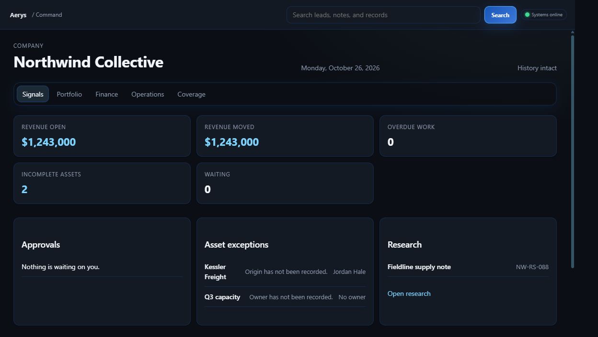
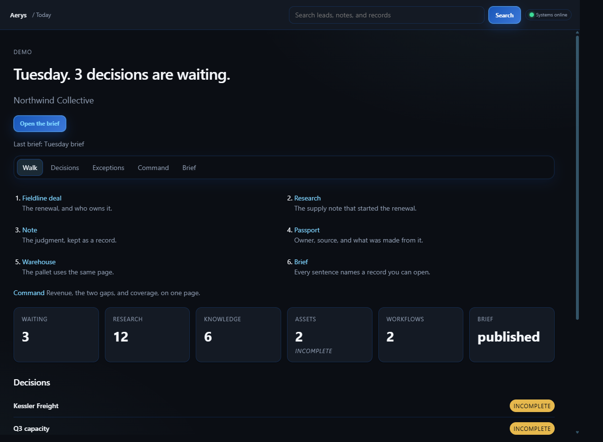
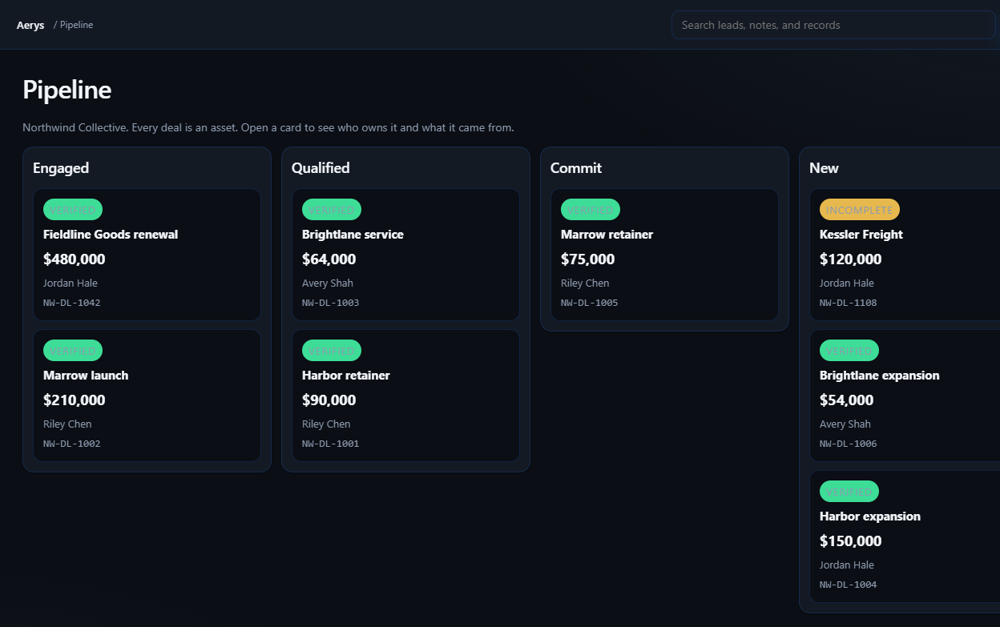
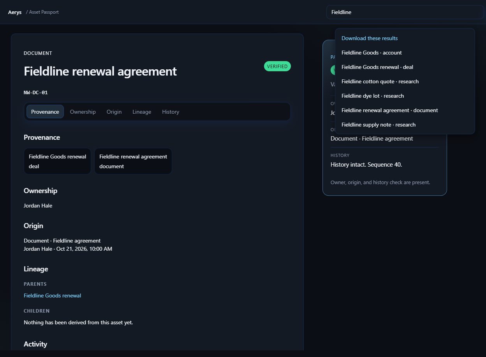
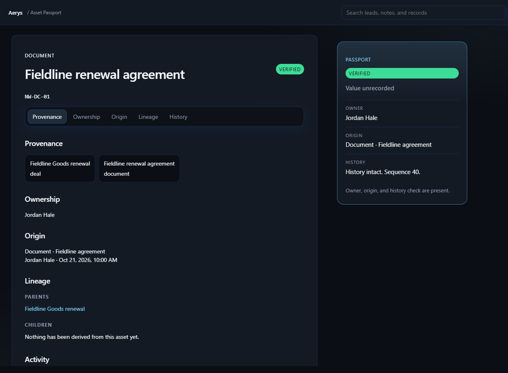
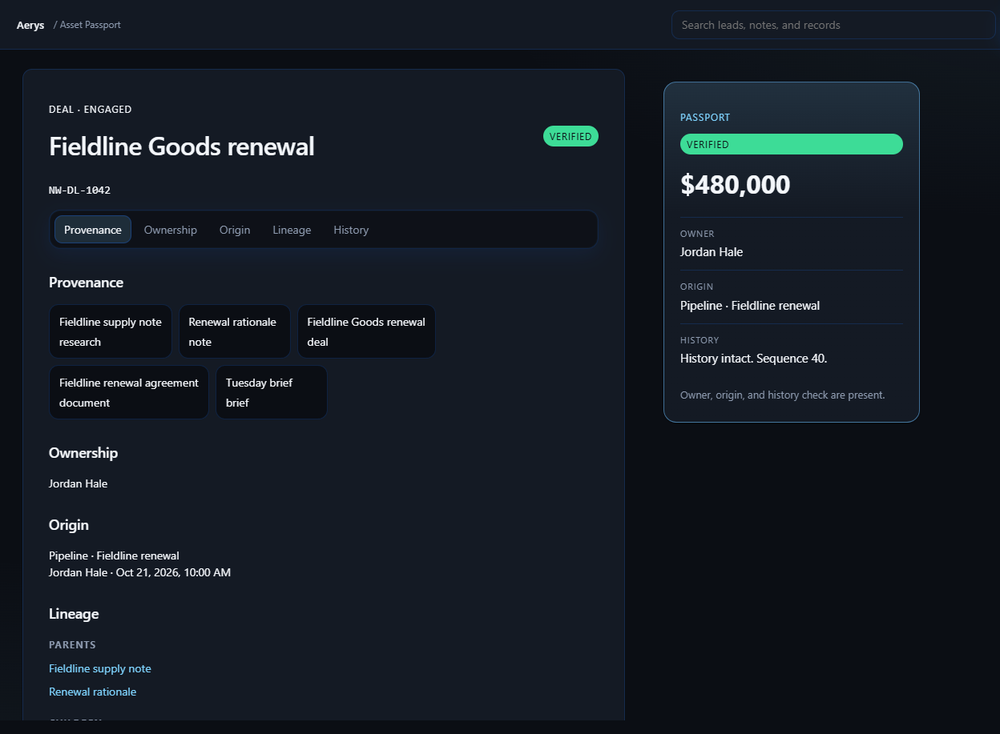
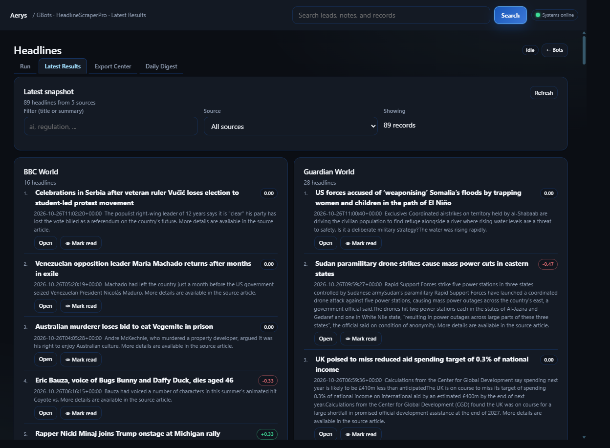
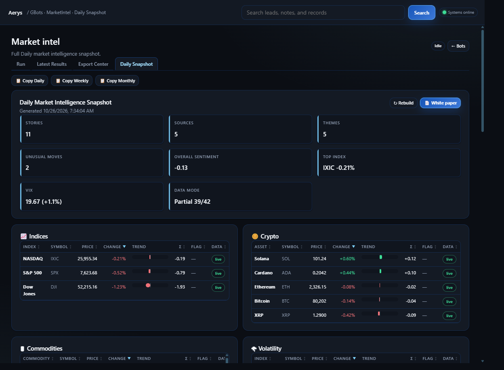

Sales uses one system.
Commercial activity is current there, and invisible everywhere else.
Aerys Desktop · GenesisOS Labs
Aerys is a unified business operations desktop & mobile app. Owners & operators see company health, finances, operations, what is happening across every department, & what needs a decision.
The company data stays local to your devices, cloud optional. Works on PC, macOS, iPhone, & android devices.

Why businesses become fragmented
The work is happening. It is happening in too many systems spanning across thousands of documents. When Leadership recieves reports, they are already out of date.
Disconnected systems
Too many systems. No shared picture.
Each one current. None of them the company.
Commercial activity is current there, and invisible everywhere else.
The work in motion is a second version of the same day.
The file and the decision are apart.
Every department tracks its own budget, but the numbers don’t connect to a unified view of the business.
Company insights & health arrives too late and the data is irrelevant.
Information silos. No executive visibility. No single operational picture.
One operational picture
Sales & Marketing activity, operations, documents, research, approvals, and intelligence stop living in separate tools. The operator sees the company.
What the picture holds
Not another system to check. The operational view the other systems never shared.
How information flows
Sales, Marketing, operations, finance, HR, legal, research, and documents each produce information. Aerys carries that information into the picture leadership actually opens.
Into Command
Who it is for
Founder
Sales, operations, files, and decisions are already in motion. Aerys is the picture you open before you open another system.
Operations Lead
See what is waiting, who owns it, and what changed. The report is the picture, not a deck you build on Friday.
Department Team
Start with the team that feels the pain most. Sales, operations, finance, research, HR, or another department. See that team clearly first, then expand the same picture across the company.
Demo
See the operational picture with your own company. Ask for a demo, or say you want a design-partner seat.
Command
Command is the operational layer. Business health, company visibility, and decision readiness are on this page. The pipeline and the files are proof underneath it.

The operational layer

The morning opens on what the business is waiting on. Decisions, research, and the records behind them are already in the picture.
The company in these screens is Northwind Collective sample data. It shows the operational picture before your own records are loaded.
Department coordination
Commercial work, CRM, marketing, & advertising are all separate data streams. The board shows what moved, who owns it, and what is waiting — so sales & marketing data is unified under one OS.

Documents in the picture
A search returns the work and the file together. The document is no longer a second system leadership has to go find.


Decision support
A passport is how a record stays trustworthy. Owner, origin, history, and use sit on the same page as the decision.

Business intelligence
News headlines and live market intel arrive with the source attached, and they sit in the same morning as the decisions. The briefing is part of the operational picture.

Business intelligence
Indices, crypto, and the daily snapshot are part of operational awareness. Leadership reads them in the same picture as the decisions.

Request a demo. We will open Command and walk company health, what needs attention, and what needs a decision.
One operational picture of the company.
Request a Demo